Print Version
- Welcome
- Introduction
- Types of Marine Surveys
- International Hydrographic Organization (IHO)
- Positioning
- Sounding Methods
- Survey Data Sources
- Nautical Charts
- Using Nautical Charts
- Other Hydrographic Products
- Summary
Welcome
Objectives
Types of Marine Surveys
- State the key elements of a hydrographic survey
- Identify the key differences between hydrographic surveys and bathymetric, geophysical and oceanographic survey
History
- Describe the history of hydrographic surveying
Data Collection Systems
- Explain the general operating principles, advantages, and limitations of a single beam echosounder
- Explain the general operating principles, advantages, and limitations of a multibeam echosounder.
- Explain the general operating principles, advantages, and limitations of side-scan sonar
- Explain the basic operation of a CTD
- Explain the general operating principles, advantages, and limitations of LIDAR
System Calibration and Corrector Application
- Explain the vessel offset measurement applied to data sets
- Explain offset measurements applied to data collection sensors
- Explain correctors and offsets applied to hydrographic data
Nautical Charts
- List the different types of nautical charts
- List the different information shown on a nautical chart
- Describe Chart No. 1
- Describe Notice to Mariners
- Demonstrate an ability to read and use a navigational chart in typical commercial and military applications
Introduction
What is Hydrography?
Definitions
Literally translated, hydrography means water mapping. That's quite a broad definition and in fact has different meanings depending on the scientific discipline to which it refers. Oceanographers use the term to describe and map the physical characteristics of water such as temperature, salinity, and chemical content. Geographers and geologists use hydrography to define the water surface in the U.S. and the direction and volume of water flow between water bodies. Hydrography, as used in nautical charting, is focused on identifying hazards to safe navigation which includes shallow depths, shipwrecks, rocks, or other dangerous objects. The International Hydrographic Organization defines hydrography as follows:
Hydrography is the branch of applied science which deals with the measurement and description of the physical features of oceans, seas, coastal areas, lakes and rivers, as well as with the prediction of their change over time, for the primary purpose of safety of navigation and in support of all other marine activities, including economic development, security and defense, scientific research, and environmental protection.
The key here is the emphasis on safe navigation and features related to that endeavor.
Principal Components
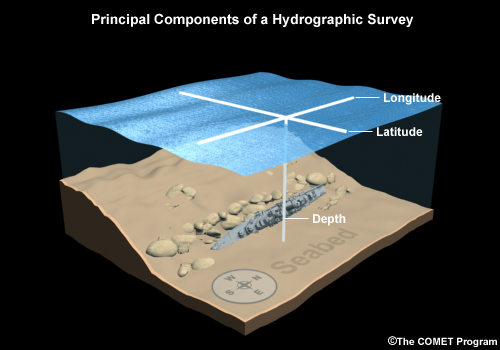
The end result of a hydrographic survey is a nautical chart: a map that shows the seafloor and other features related to navigation. Thus every hydrographic survey has four major components.
1. Positioning. This refers to the location of the survey data with respect to latitude and longitude.
2. Water depth, measured from a vertical reference surface or datum, such as mean lower low water, to the seafloor.
3. Features, sometimes referred to as targets, which may be hazards to navigation. These include wrecks, shoals, reefs, and other features.
4. Seafloor characteristics. This refers primarily to the bottom type (for example, mud, sand, bedrock, coral reef). Mariners want to know seafloor characteristics to determine good anchorages or the danger in running aground.
Hydrographic Sciences
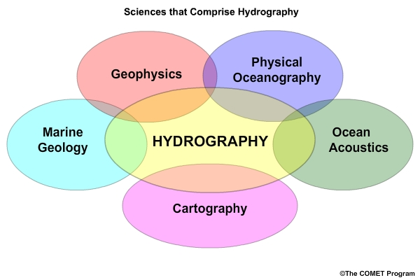
While we treat hydrography as a single discipline, it is really composed of parts of several sciences.
Hydrographers use physical oceanography to characterize the properties of the water column, which directly impact ocean acoustics, and to analyze the tidal characteristics of the survey area. Most modern surveys use acoustic soundings to determine the water depth, so a successful survey requires a solid understanding of acoustics. Marine geology is useful in characterizing the seafloor. Determination of the geoid and other vertical reference levels requires geophysical data, primarily gravity. Gathering the data together and producing a nautical chart depends on sound cartography.
Thus, hydrography is really a multi-disciplinary science drawing on many fields to gather and process data.
Benefits
Accurate hydrographic surveys and nautical charts yield many societal benefits.
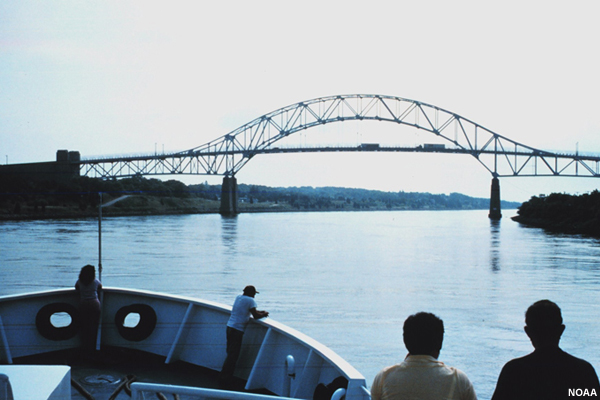
Safety of navigation is the single most important result of hydrography. This allows ships to safely travel in and out of ports, saving lives and property and protecting the environment.
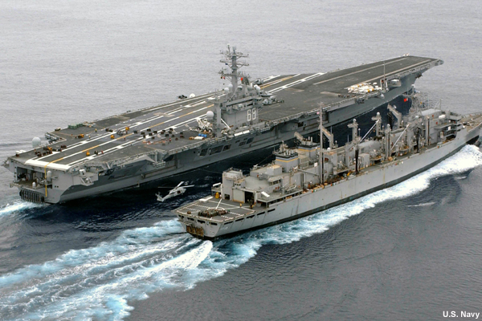
National Security requires that navies successfully navigate coastal waterways.
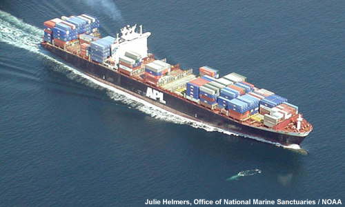
Maritime commerce drives the global economy and depends on safety of navigation.
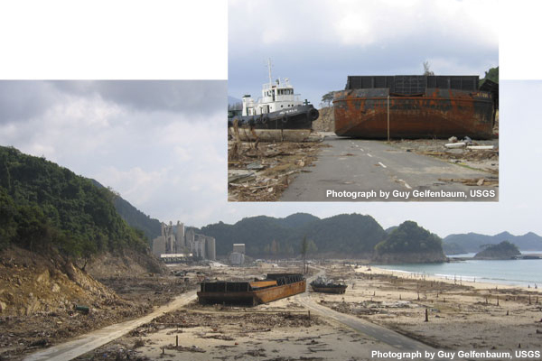
Humanitarian relief in the aftermath of a natural disaster frequently arrives on a ship. Until a clear and safe route to shore is established by hydrographers, supplies cannot reach those in need.
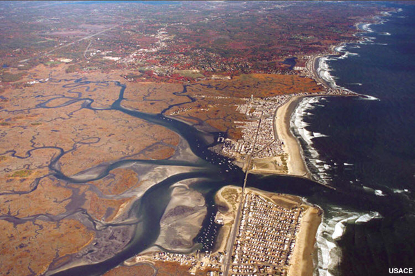
Environmental management in coastal areas depends on knowledge of changes in the marine environment. Hydrographic surveys determine changes to bathymetry and seafloor characteristics.
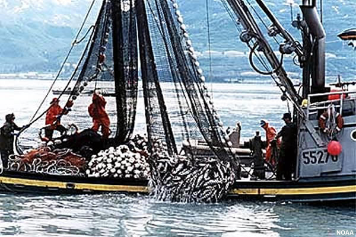
Commercial fishing uses nautical charts and other hydrographic products to locate fishing grounds and navigate safely.
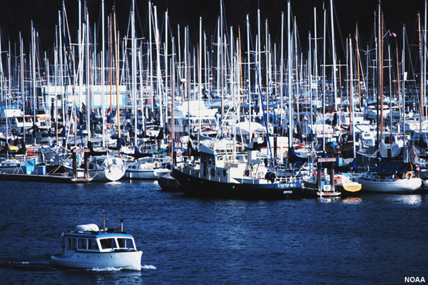
Lower insurance costs. Updated nautical charting information can lead to a potential reduction in insurance cost for commercial and private shipping companies, marinas, and port and harbor authorities.
History
Office of Coastal Survey (1807) to present day NOAA
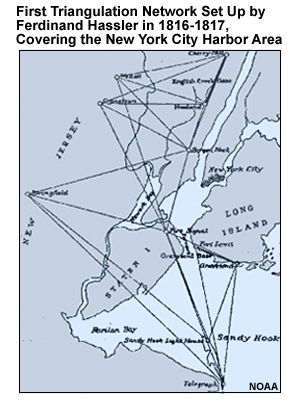
Hydrography dates back to the sea commerce of ancient Cretans and Phoenicians as early as 3000 B.C.
Nearly 5000 years later, President Thomas Jefferson established the Survey of the Coast in 1807 under Ferdinand Hassler. Hassler proposed building a geodetic triangulation network, like the one shown here, as a framework for both topographic surveys of the shoreline and hydrographic surveys of harbors and nearshore waters.
The Survey of the Coast published its first chart in 1835.
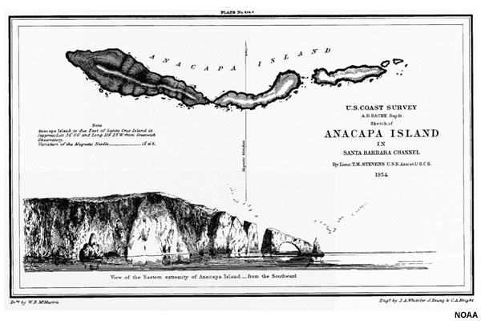
This sketch of Anacapa Island, located off of Southern California, was published in 1854. It was drawn by the famed artist James Abbott Whistler, who painted the iconic Whistler's Mother and was employed for a short time by the U.S. Coast Survey.
After several reorganizations over many years, the Survey of the Coast has evolved into the Office of Coast Survey, which is in the National Ocean Service, a part of NOAA.
U.S. Navy Hydrography
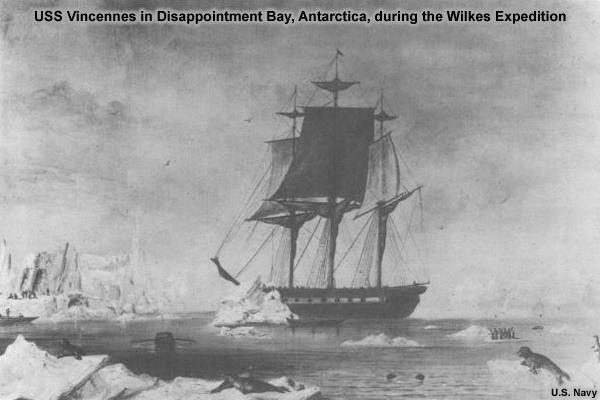
The U.S. Navy’s entry into hydrography started in 1830 with establishment of the Depot of Charts and Instruments under the command of LT Charles Wilkes. Among Wilkes’ accomplishments, he lead an expedition in 1838 to explore and survey the Southern Ocean and "determine the existence of all doubtful islands and shoals, as to discover, and accurately fix, the position of those which [lay] in or near the track of our vessels in that quarter." [J.K. Paulding, Secretary of the Navy, 1838]
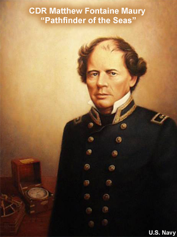
In 1842, the Depot of Charts and Instruments became the U .S. Naval Observatory. Its first Superintendent was CDR Matthew Fontaine Maury, who held that position until he resigned in 1861. Maury produced an extraordinary volume of work. For example, after extensively researching old ships’ logs, he published Wind and Current Chart of the North Atlantic, which showed sailors how to use the ocean's currents and winds to their advantage and drastically reduced the length of ocean voyages. For this and other work, Maury became known as the "Pathfinder of the Seas."
U.S. Army Corps of Engineers
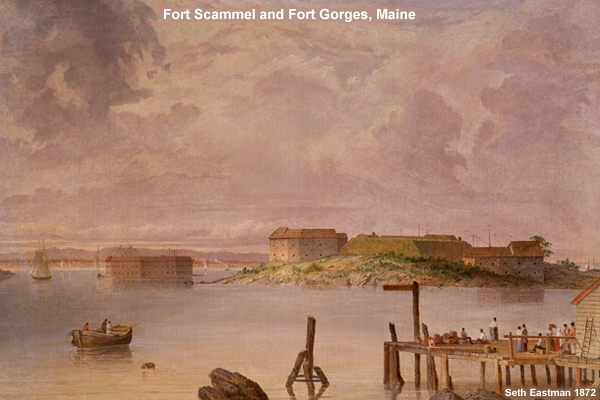
After the War of 1812, Congress tasked the USACE with evaluating the coastlines of the U.S. for defensive fort accommodations. Hydrographic survey information of the adjacent harbors, rivers, and shorelines was made available to the local authorities as a matter of recourse. The Survey Act of 1824 expanded the scope of the USACE to include canals and navigation waterways of national interest.
U.S. Hydrographic Agencies
Several agencies within the U.S. contribute to the production of nautical charts and other hydrographic products, including
- the NOAA National Ocean Service,
- the Naval Oceanographic Office and its Fleet Survey Team,
- the U.S. Army Corps of Engineers (USACE),
- National Geospatial-Intelligence Agency (NGA),
- U.S. Coast Guard (USCG), and
- Private Contractors/Commercial Companies.
In this section we describe the role each agency plays.
National Oceanic and Atmospheric Administration (NOAA)
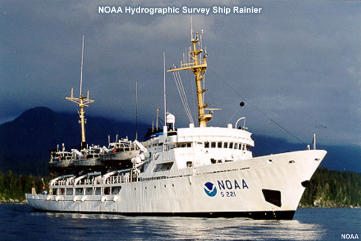
Three main offices within the National Ocean Service of NOAA work together to produce nautical charts. The Office of Coast Survey is the national charting authority and is responsible for producing the suite of nautical charts that covers the U.S. EEZ (Exclusive Economic Zone) from shore to 200 nautical miles offshore, including U.S. territories in the Pacific. Charts and other products are available at their website. NOAA also maintains tide, current, and other oceanographic data through the Center for Operational Oceanographic Products and Services (CO-OPS). This data is available through their website. Finally, the National Geodetic Survey maintains the National Spatial Reference System (NSRS), a consistent national coordinate system that specifies latitude, longitude, height, scale, gravity, and orientation throughout the nation, as well as how these values change with time.
Office of Coast Survey website: http://www.nauticalcharts.noaa.gov
Center for Operational Oceanographic Products and Services (CO-OPS) website: http://tidesandcurrents.noaa.gov/
National Geodetic Survey website: http://geodesy.noaa.gov/
U.S. Army Corps of Engineers (USACE)
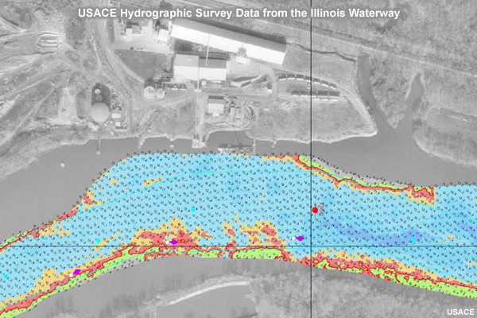
Hydrographic surveys at the U.S. Army Corps of Engineers primarily focus on channels, harbors, and inland waterways for construction and to assist in the maintenance of published chart depths. The Corps of Engineers has developed navigation charts for much of the 8,200 miles of rivers in the U.S. Inland River System. Electronic charts are available online.
U.S. Army Corps of Engineers Nautical Charts Online: http://www.agc.army.mil/echarts
Naval Oceanographic Office / Fleet Survey Team
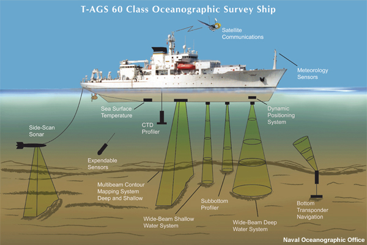
The Naval Oceanographic Office (NAVOCEANO) provides oceanographic and hydrographic products and services to support Department of Defense operations, including humanitarian assistance and disaster relief. NAVOCEANO and the Fleet Survey Team conduct hydrographic surveys in foreign waters, typically in cooperation with a foreign national charting agency. On occasion, they will survey in U.S. waters in cooperation with NOAA.
NAVOCEANO uses a variety of survey platforms to conduct hydrographic surveys around the globe, including ships, small boats, unmanned underwater vehicles and LIDAR aircraft.
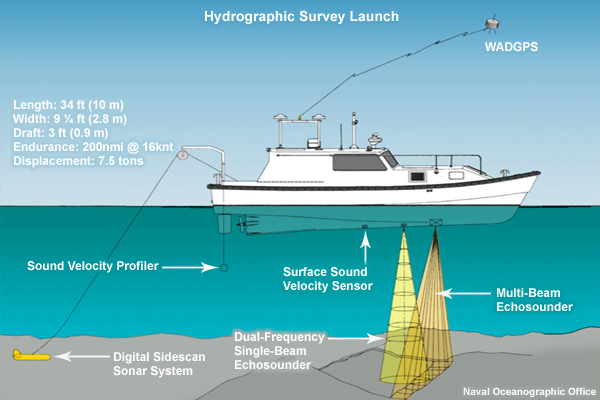
The Fleet Survey Team of the Naval Oceanographic Office is a specialized team of military and civilian experts that provides hydrographic and oceanographic expertise in the littoral environment.
National Geospatial-Intelligence Agency (NGA)
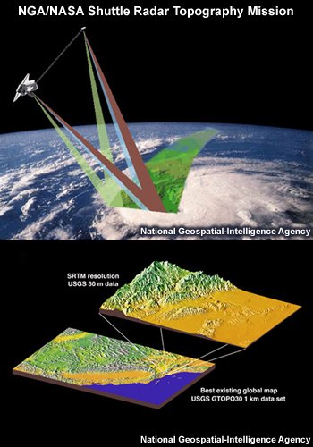
NGA focuses on international geospatial intelligence. NGA is the U. S. National charting authority for all regions outside the U.S. EEZ. They are responsible for creating and maintaining international nautical charts, Notice to Mariners, Light List, and Sailing Directions. NGA is the primary customer for NAVOCEANO and the Fleet Survey Team for hydrographic information.
U.S. Coast Guard (USCG)
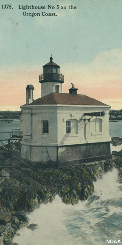
While the U.S Coast Guard does not conduct surveys or produce nautical charts, historically they are responsible for maintaining buoys, lighthouses, LORAN, and other aids to navigation. They also publish Local Notice to Mariners and maintain the coastal Differential GPS reference system.
Private Contractors / Commercial Companies
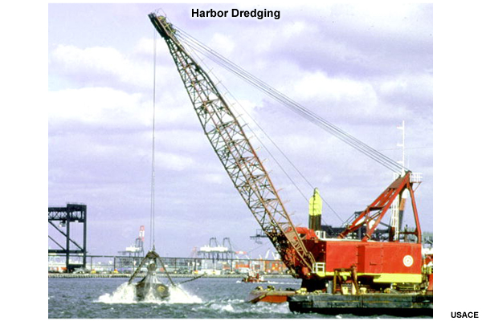
Private contractors and commercial companies provide specialized hydrographic surveys for activities like dredging, offshore energy exploration, and laying underwater cables and pipelines. They also perform surveys for NOAA and the U.S. Army Corps of Engineers.
Questions
Question 1
Which of the following agencies conducts hydrographic surveys in U.S. Waters?
(Choose all that apply.)
The correct answers are (b) NOAA and (c) U.S. Army Corps of Engineers.
The NOAA Office of Coast Survey is responsible for producing the suite of nautical charts that covers the U.S. EEZ (Exclusive Economic Zone) from shore to 200 nautical miles offshore, including U.S. territories in the Pacific. Hydrographic surveys at the U.S. Army Corps of Engineers primarily focus on channels, harbors, and inland waterways.
Question 2
Which of the following sciences comprise the field hydrography?
(Choose all that apply.)
The correct answers are a, b, d, and e.
Hydrographers use physical oceanography to characterize the properties of the water column, which directly impact ocean acoustics, and to analyze the tidal characteristics of the survey area. Most modern surveys use acoustic soundings to determine the water depth, so a successful survey requires a solid understanding of acoustics. Marine geology is useful in characterizing the seafloor. Determination of the geoid and other vertical reference levels requires geophysical data, primarily gravity. Gathering the data together and producing a nautical chart depends on sound cartography.
Question 3
Who lead an expedition in 1838 to explore and survey the Southern Ocean?
(Choose the best answer.)
The correct answer is (c) LT Charles Wilkes.
Wilkes lead the expedition in 1838 to explore and survey the Southern Ocean and "determine the existence of all doubtful islands and shoals, as to discover, and accurately fix, the position of those which [lay] in or near the track of our vessels in that quarter." CDR Matthew Fontaine Maury became known as the "Pathfinder of the Seas." Nathaniel Bowditch wrote the American Practical Navigator, first published in 1801.
Types of Marine Surveys
So what defines a hydrographic survey and how does it differ from other marine surveys? In this section we examine different types of surveys.
Hydrographic
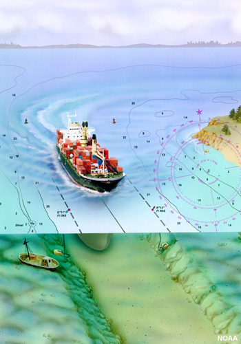
Hydrographic surveys include sounding data (depth, position, time, and seawater characteristics) at sufficient density to accurately depict the full detail of the seafloor. Of primary importance is the location and description of man-made and natural features such as shoals, wrecks, rocks, or coral reefs, which may affect surface navigation.
Hydrographic surveys for nautical charting usually meet standards defined by the International Hydrographic Organization, discussed later in this module.
Bathymetric
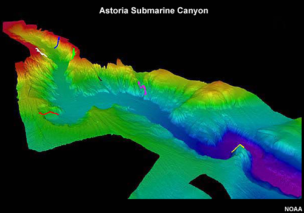
Bathymetric surveys differ from hydrographic surveys in that they are usually more general and less precise and are often performed in deep water. The data collected is essentially the same as that of a hydrographic survey but the emphasis is on the shape of the seafloor. This image shows an example of the results of a bathymetric survey.
Oceanographic
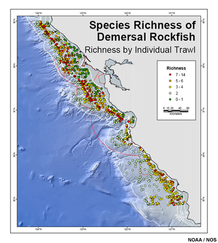
Oceanographic surveys collect scientific information in the zone that extends from the water surface to the seafloor. This may include water chemistry (salinity, dissolved oxygen, etc), biological data like that shown here, or physical data like sea heights, currents, or air-sea interactions. Data may be used for research, environmental management, fisheries, or commercial purposes.
Geophysical
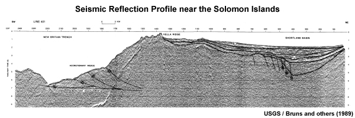
Geophysical surveys characterize the structure and composition of the earth beneath the sea floor and do not focus on the ocean itself. Measurements might include gravity, magnetism, or heat-flow, as well as seismic reflection surveys that probe into the sediments and rocks beneath the seafloor. This image shows a seismic reflection profile. In it we can see sediment layers along with some of the faults that cut the rock layers.
International Hydrographic Organization (IHO)
The International Hydrographic Organization is an intergovernmental consultative and technical organization that was established in 1921 to support the safety in navigation and the protection of the marine environment.
The goals of the IHO include the following:
- Coordination of the activities of national hydrographic offices
- Uniformity in nautical charts and documents
- Adoption of reliable and efficient methods of carrying out hydrographic surveys
- Development of the science and techniques in the field of hydrography
Most coastal nations in the world are members of the IHO, though several in Central America, Southeast Asia, and Africa are not.
IHO Homepage: http://www.iho-ohi.net/english/home/
IHO Standards
In an effort to achieve standardization of nautical charts and other products, the IHO has published standards that cover many aspects of hydrography. These include:
S-4: Standard for Nautical Charts
S-5 and S-8: Competency Standards for Hydrographic Surveyors and Cartographers
S-32: Hydrographic Dictionary
S-44: Standards for Hydrographic Surveys
S-57: Standards for Electronic Navigational Charts (ENCs)
S-52: Standards for systems that display ENCs.
S-100: Universal Hydrographic Data Model
These standards have made it possible for mariners to use charts compiled by member organizations with confidence.
Text Note: IHO Publications available at http://www.iho-ohi.net/iho_pubs/IHO_Download.htm
Standards Defined by S-44
IHO Special Publication 44 (S-44) summarizes standards for hydrographic surveys. These standards cover things like the maximum errors allowed for position and depth soundings. The standards vary depending primarily on the importance of the safety of surface navigation at a location. This results in different survey "orders", as follows:
Special Order surveys cover areas where ships may need to navigate with minimum clearance between the ship's hull and the seafloor and where the bottom characteristics are potentially hazardous to vessels (for example, boulders or rock outcroppings). Special Order surveys require the highest accuracy of all surveys. Inherent in the requirements are closely spaced survey lines with side-scan sonar or multibeam echo sounder arrays to obtain "100% bottom search".
Order 1a and 1b surveys are intended for harbors and general intracoastal and inland navigation channels where ships have a greater clearance above the seafloor or where the bottom characteristics are less hazardous (for example, silt or sand) than for Special Order survey areas. Order 1a and 1b surveys are intended for areas shallower than 100 meters.
Order 2 surveys are the least stringent order and are intended for those areas where a general description of the seafloor is considered adequate. Order 2 surveys are applicable for those areas with depths generally greater than 100 meters.
IHO periodically updates S-44. The current Fifth edition (February 2008) reflects the adoption of newer technologies including satellite positioning (GPS), multibeam and side-scan sonar, bathymetric LIDAR, and powerful shipboard computers.
IHO S-44: http://www.iho-ohi.net/iho_pubs/standard/S-44_5E.pdf
Positioning
In order to conduct a hydrographic survey, the position of the measurement must be known. This requires the determination of latitude and longitude with respect to the desired horizontal datum plus adjustments to obtain the position on the seafloor. Furthermore, the accuracy of the position must meet IHO standards applicable to the survey.
This section looks at various ways to determine position.
Visual
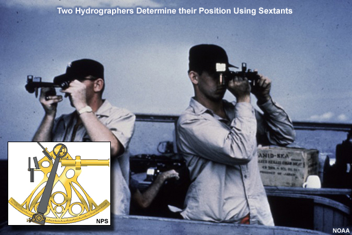
For over two thousand years navigators have known how to determine their latitude, initially using strings with knots to measure the elevation of Polaris, the North Star. Progressively more sophisticated instruments were developed over the years (astrolabe, quadrant and cross-staff) that could determine latitude from the sun or stars. Determining longitude was much more difficult and depended on the development of precise portable clocks that could operate aboard ships. This occurred in the 1770's shortly after the production of the first sextant in 1759. In 1771 it was suggested that sextants be used to measure horizontal angles between three or more known points on shore to determine one's position at sea. This principle was well known by land surveyors but needed an accurate angle-measuring device like the sextant to be used at sea. Hydrographic surveys of the channels off the Kent coast of England in 1774 were the first to use horizontal sextant angles for positioning. This was one of the most accurate positioning methods until the late 1970's when it was gradually replaced by high frequency electronic positioning systems.
Electronic
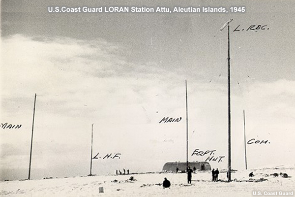
Electronic positioning for hydrographic surveys can trace its beginning to Radio -Acoustic-Ranging (RAR), first used in 1924, which was the first precise positioning system in human history to be independent of visual observation. One of the earliest electronic systems used for navigation (1940's) was LORAN (LOng RAnge Navigation) but its use for hydrography, especially nearshore, was limited by its relative inaccuracy. Numerous other electronic systems were developed over the next two decades generally with increasingly greater accuracy. Medium range positioning systems operated in the 2-4 MHz frequency range, used ground wave propagation, and could reach ranges of 100 to 200 nautical miles with accuracies of 20 meters. Higher frequency systems (3000 – 9599 MHz) were highly accurate (less than 5 meters) but limited by line-of-sight (typically less than 20 nautical miles). Virtually all of the above electronic positioning systems for hydrography have been replaced by the Global Positioning System.
For more information on RAR, which was first used in 1924, see the following website: http://www.history.noaa.gov/stories_tales/radio_acoustic.html
Satellite (GPS)
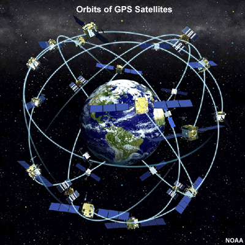
Today the Global Positioning System (GPS) is used to determine position. GPS was developed by the U.S. Department of Defense over a period of 20-30 years and has been operational since 1993. GPS uses a constellation of between 24 and 32 satellites in low earth orbit that transmit precise radio signals and can offer positions accurate to a few meters horizontally in real time.
GPS is one of several Global Navigation Satellite Systems (GNSS) deployed or planned by the U.S. and other countries.
Sounding Methods
Soundings are measurements of water depth. Soundings paired with their respective positions allow hydrographers to create bathymetric maps. And just as positions must conform to IHO guidelines, soundings must as well.
This section looks at sounding methods, from historical methods up through the state-of-the-art.
Historical Methods
Lead Line / Sounding Pole
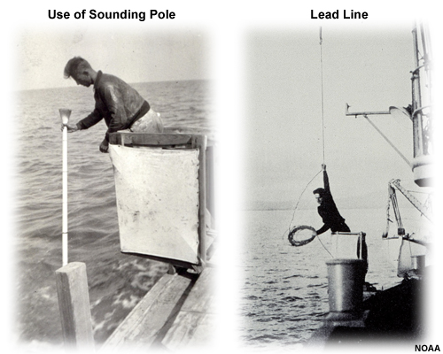
The earliest sounding methods were conducted with either a sounding pole or a lead line. While these photos date to the early 1900's, these techniques were used from the start of hydrographic surveying, dating back to at least the ancient Egyptians and continued in wide use until the 1930's. For obvious reasons, these techniques were slow, relatively inaccurate, and prone to missing important details in the bathymetry between "spot" soundings.
Wire Drag
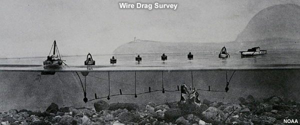
To compensate for the incomplete coverage of the seafloor with lead line soundings, a technique called wire drag was developed in the early 1900s. As the name implies, a weighted wire at a set depth and supported by several buoys was pulled between two ships. When the wire encountered an obstruction, it was pulled taut into a V-shape, marked by the buoys at the surface. Surveyors could then determine the position of the obstruction.
While this technique could reliably find obstructions, it could not determine bathymetry directly. And because it was very time consuming, it was only used in the most navigationally significant areas.
Acoustic Methods
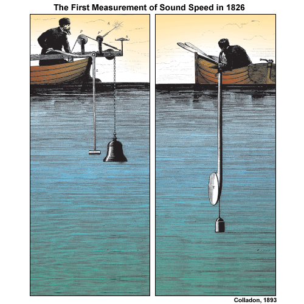
Today, most hydrographic sounding is done using acoustic methods. These methods date back to 1826 when Daniel Colladon first measured the speed of sound underwater in Lake Geneva, Switzerland. As this diagram shows, his technique was to ring a bell underwater and ignite a pan of gunpowder at the same time. On the receiving end, the time of the gunpowder flash and the time the sound arrived were both measured, providing the travel time over a known distance. The result was remarkably accurate.
Fast-forward about three decades and LT John Mercer Brooke of the U.S. Navy invented the first successful deep-sea sounding device in 1850.
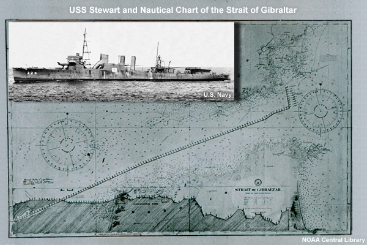
But it wasn't until almost a century after Dr. Colladon measured sound speed underwater that
Dr. Harvey Hayes invented the Sonic Depth Finder in 1919. His instrument consisted of
(1) a transmitter to generate and send sound waves to the ocean floor,
(2) a receiver to detect the reflected waves, and
(3) a timer calibrated at the speed of sound in seawater that directly indicated water depth.
The U.S. Navy installed the Sonic Depth Finder on U.S.S. Stewart in 1922. This chart shows soundings across the Straits of Gibraltar measured aboard the U.S.S. Stewart on its first voyage with the sounder.
Single Beam Echo Sounder
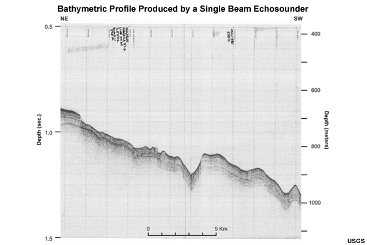
With single beam echosounders, the sound is transmitted straight down in a focused beam, typically a 3-20° cone. This yields a single depth measurement from somewhere inside the cone. Taken in a continuous string, a single beam echosounder produces a seafloor profile like that shown here.
One misconception about single beam echosounders is that they somehow record the average depth within the area of the cone on the seafloor. Actually, the first sound return for each "ping" is used as the depth. Therefore, the shallowest depth within the cone is recorded. In areas with a rough seafloor and/or large relief, this means that the "least depth" within the cone of transmitted sound is recorded, not the average depth.
Single beam echosounders are ideal for shallow water because they are much less expensive and less complicated than multibeam sonar systems. However, they have the major disadvantage of potentially missing features on the seafloor that are between the lines being run.
Single Beam Corrections
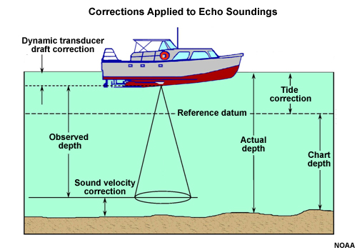
Numerous corrections must be made to the each measured depth to account for variability in the ocean or movement of the vessel.
The raw data recorded for single beam echosounder measurements consist of the time it takes for a sound pulse to travel to the seafloor and return (the 2-way travel time). By assuming a fixed velocity at which sound travels through seawater, this time can be used to compute the "Observed Depth" in the above figure. In reality, unless seas are extremely calm, vessels move up and down over the waves (called heave) and this movement needs to be removed to obtain an accurate "Observed Depth". Pitch (bow moving up and down) and roll look like heave on a single beam record.
Because the sound speed is not constant throughout the water column, a correction needs to be determined and applied to each "Observed Depth". The "sound velocity profile" is typically measured with a sound velocimeter, which is lowered through the water column, or calculated from a temperature/salinity profile.
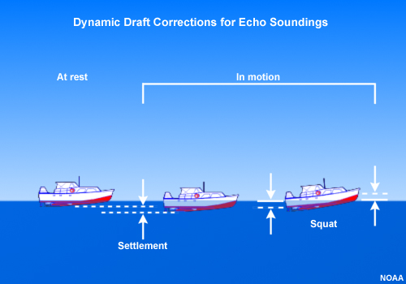
Next, a correction is needed to account for the fact that the echo sounder transducer is below, not at the water's surface. While at rest, this difference is referred to as draft. However, a vessel's draft changes as it moves through the water. This phenomenon is called settlement and squat.
Combined, the static draft, settlement, and squat are called dynamic draft and this varies with the speed of the vessel through the water.
Finally, a correction needs to be made to take into account the rise and fall of the tide. Tides are discussed separately in a later section of this module.
Positioning also has corrections. There is a horizontal offset between the GPS receiver and the sonar transmitter/receiver that needs to be applied. A time delay exists between the arrival of the GPS signal and the recording of the position, generally fractions of a second. Because the vessel is moving, the recorded position needs to be corrected for the time delay.
Multibeam Echo Sounder (MBES)
Multibeam echosounders use many narrow, focused beams (16-1400) to map a swath of seafloor. Each beam returns one depth measurement. The width of the swath can equal from 2 to more than 5 times the water depth. This width depends on many factors including the frequency of the beams, the configuration of the transmitting and receiving transducers, the water depth, and the sound velocity profile in the water column.
Multibeam echosounders are most efficient in deep water because of the wide area of coverage which increases with depth. In shallow water, many more survey lines must be run to cover the same area. One complication of multibeam echosounders is that they produce vast quantities of data and thus require specialized computer systems and software to collect and analyze that data. Despite these challenges, multibeam echosounders are used for most hydrographic surveys when conditions are applicable.
Multibeam Echo Sounder Corrections
The corrections applied to multibeam echo sounder data are somewhat the same as those applied to single beam data. However, due to the fan-shaped beam, some of the corrections are more complicated.
For single beam echo sounders, one beam is pointed down nearly vertically so vessel orientation is not critical and all corrections due to vessel motion can be corrected by applying appropriate correctors for heave, settlement, and squat. For multibeam, the equipment used to measure vessel motion is called a Heave-Roll-Pitch (HRP) sensor and it is placed as close as possible to the vessel's center of motion and oriented along the ship's keel. Measurements are then made to determine the position of the multibeam sonar and GPS receiver relative to the position of the HRP sensor. These "offsets" are applied during data acquisition to properly orient all of the sensor measurements. Measurements from the HRP sensor are used to determine the correct position for each and every sounding in the multibeam fan. This graphic shows an example of how irregular the multibeam path can be with heave, roll, and pitch.
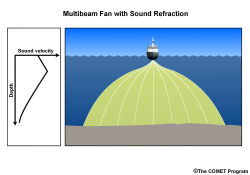
The determination of the sound velocity profile is much more critical for multibeam systems because of the fact that most of the beams are not vertical – they fan out across a wide range of angles. The non-vertical beams that pass through the water are bent or "refracted" due to the changing velocity of sound in the water column, which if uncorrected, would yield incorrect depths and positions.
The sound velocity profile can vary significantly over short times and distances, particularly in shallow water. These variations result from several causes, including daily heating and cooling, surface runoff from nearby land, and cold or warm ocean currents. As a result, sound velocity profiles must be determined frequently throughout hydrographic surveys.
Multibeam Echo Sounder (MBES): Examples
Data from multibeam echosounders can be processed to produce a high-resolution map with sometimes stunning detail, as we can see in the three-dimensional images of wrecks in this slide show.
Side-Scan Sonar
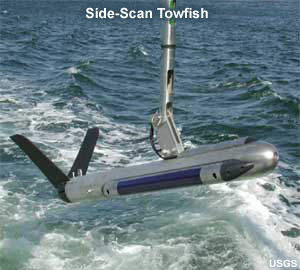
Side-scan sonar is similar to multibeam echosounding in that it covers a swath of the seafloor, except that a time-series of the strength of the return signal is measured, not the time of the first return. Hence, side-scan cannot measure depth but rather returns a grayscale image showing objects and shadows not unlike a photograph. In addition, the sound waves are usually transmitted and received from a "fish" towed close to the seafloor, like the one shown here, although they may be hull-mounted in shallow water.
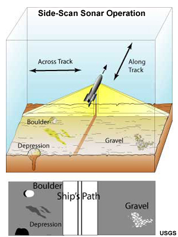
Towing the fish closer to the seafloor allows a different perspective when surveying: one from near the seafloor that allows more of a side-ways profile.
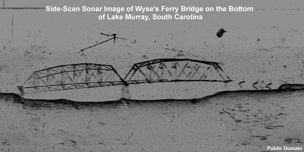
Side-scan sonar is used to locate and identify underwater features, such as wrecks, rocks, and other objects. For example, this side-scan image shows a submerged bridge at the bottom of a flooded reservoir.
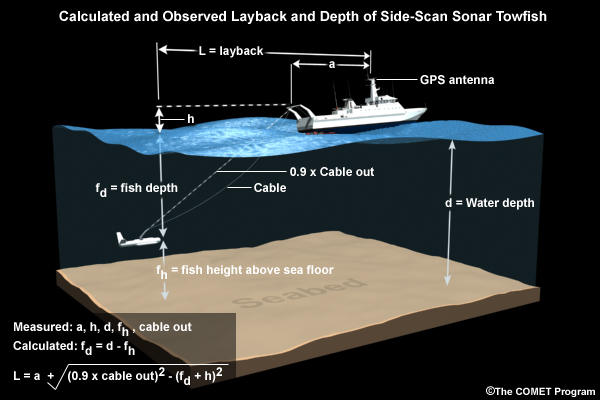
As previously mentioned, side-scan sonar can not accurately measure depth. The correct position and orientation of the fish is not well known due to several variables, including the length of cable out, bends in the cable, and pitch and roll of the towfish. However, the position can be approximated as shown in this diagram.
Interpreting Side-Scan Sonar Images
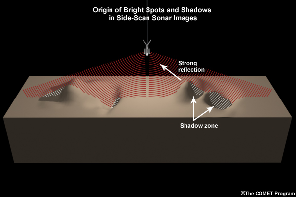
While we tend to look at side-scan sonar images as pictures of the seafloor, what are we really looking at? As this schematic diagram shows, ridges and projections on the seafloor reflect more sound energy resulting in a brighter color. These features also leave a shadow zone which no sound energy reaches, so none can return. Knowing the height of the towfish above the seafloor and the length of the shadow, one can approximate the height of the object above the seafloor.
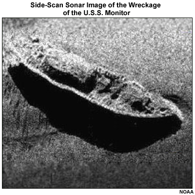
This image shows the wreckage of the U.S.S. Monitor, the famous civil war era "iron-clad" ship. Where do you think that towfish was located with respect to the image?
(Choose the best answer.)
The correct answer is (a) Above.
In this image, the shadow is always located below the bright feature (like the bright rail above the shadow of the hull). This places the towfish above the ship in the image.
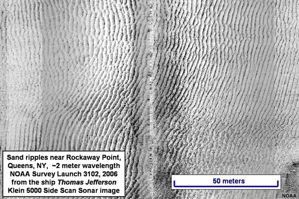
This image shows sand ripples on the seafloor and illustrates one way in which side-scan sonar can be used to infer the bottom type in hydrographic surveys. Reefs, boulders, and other bathymetric features can also be picked out of side-scan sonar images.
Side-Scan vs. Multibeam Sonar
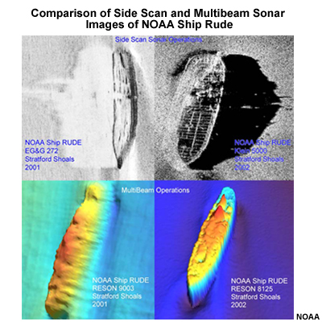
Side-scan and multibeam sonar share many similarities. They both broadcast a wide sound beam that maps a swath of seafloor. Multibeam, because it divides echoes into individual beams, can accurately map depths. Side-scan, on the other hand, is much closer to the seafloor, and so it can produce images with much higher resolution that show much more detail. This detail can allow us to identify seafloor features that might remain ambiguous with multibeam alone.
Non-acoustic
Bathymetric LIDAR
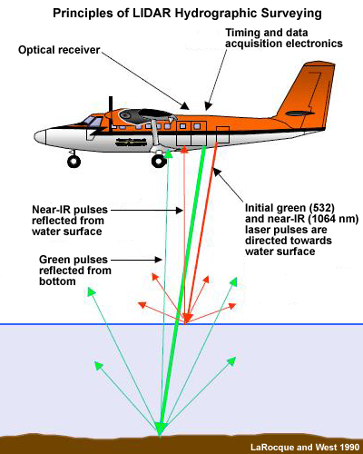
LIDAR stands for (Light Detection and Ranging). Instead of using sound, like sonar, LIDAR uses lasers to find distance. Aircraft are used to conduct LIDAR surveys. LIDAR is used extensively for topographic mapping on land. When used in hydrographic surveys, two different color lasers are used: green and red. The red laser reflects off of the water surface, while the green laser penetrates water and reflects off of the seafloor. The green laser can penetrate water up to a maximum of about 70 meters, depending on the water clarity. The time difference between the two can be used to compute depth. The LIDAR scans in an arc in front of the aircraft by reflecting the lasers off a moving mirror resulting in a broad swath as the aircraft flies along. With an accurate position for the aircraft, the result is a bathymetric map that can be combined with topographic LIDAR data to span the littoral zone.
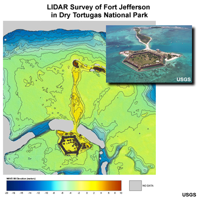
For example, this bathymetric LIDAR survey shows Fort Jefferson in the Dry Tortugas National Park, west of the Florida Keys.
And these images show 3D topography/bathymetry before and after Hurricane Ivan in 2004. Notice the breach through the barrier island.
Bathymetric LIDAR in hydrography can cover much more water area in a shorter period of time than using sonar from a boat. However, the major disadvantages of bathymetric LIDAR are its limited capability in turbid water and the possibility of missing small features on the seafloor that might be significant to surface navigation.
Satellite
Altimeters aboard satellites can be used for general bathymetric mapping in deep water. Because of variation in the strength of gravity, the water's surface mounds over features like seamounts and forms a trough over deep-sea trenches. And while this satellite-derived bathymetry is not accurate enough for nautical charting in shallow water, it is useful in determining the general shape of the deep ocean.
These images show gravity on the left and the predicted bathymetry on the right for an area between Africa and Antarctica.
Questions
Question 1
Single beam echosounders record the average depth within the area of the cone on the seafloor.
(Choose the best answer.)
The correct answer is (b) False.
The first sound return for each "ping" is used as the depth. Therefore, the shallowest depth within the cone is recorded. In areas with a rough seafloor and/or large relief, this means that the "least depth" within the cone of transmitted sound is recorded, not the average depth.
Question 2
Which does side-scan sonar record?
(Choose the best answer.)
The correct answer is (a) the strength of the return signal.
As a result, side-scan cannot measure depth but rather returns a black and white image showing objects and shadows not unlike a photograph.
Question 3
LIDAR is suitable for surveying bathymetry, but not topography.
(Choose the best answer.)
The correct answer is (b) False.
LIDAR is used extensively for topographic mapping on land. However, topographic LIDAR differs from bathymetric LIDAR and the two are conducted in separate surveys. The two surveys can then be combined to create a chart that spans the littoral zone.
Survey Data Sources
So far we have discussed how to gather data to determine our position and the water depth while surveying. However, we need to know more than position and depth to complete a hydrographic survey. We also need to know the tides, and other physical observations of the seafloor. We also need to gather information about the data we have gathered, so-called "metadata". In this section, we discuss the gathering of these last elements of our survey.
Tides, Datums, and Water Levels
When we read water depths on a nautical chart, the values are all given with respect to some particular tidal datum. The datum is the average over a tidal epoch of water height at a particular tidal phase. This graphic shows tidal datums commonly used in the U.S. and its territories.
During hydrographic surveys, the water level is constantly rising and falling with the tide and other influences, like runoff or weather. As a result, we must apply a correction so our depth is given with respect to the chart datum, typically mean lower low water. In many shallow–water areas, adjusting the sounding measurement for the tide level constitutes the largest vertical correction to sounding data. As a result, uncertainties in this correction can dominate the total error budget.
How are tides measured?
Since the early 1800s, NOAA and its predecessor organizations have been measuring, describing and predicting tides along the coasts of the United States. Today, the Center for Operational Oceanographic Products and Services (CO-OPS), which is part of NOAA's National Ocean Service (NOS), is responsible for recording and disseminating water level data.
In the past, most water level measuring systems used a mechanical recorder driven by a float in a "stilling" well. A stilling well calms the waters around the water level sensor. A typical stilling well consisted of a 12-inch wide pipe. Inside the stilling well, an 8-inch diameter float was hung by wire from the recording unit above. The data was recorded on a scrolling paper record, which was periodically retrieved.
Today's NOAA primary recorders send an audio signal down a half-inch-wide sounding tube and measure the time it takes for the reflected signal to travel back from the water's surface. The sounding tube is mounted inside a 6-inch diameter protective well, which is similar to the old stilling well. The data is then transmitted via satellite to a recording station. Other methods for measuring water levels include pressure sensors and radar sensors.
Text Note: To learn more about tides, see the COMET module Introduction to Ocean Tides
http://meted.ucar.edu/oceans/tides_intro/
Determining Tidal Datums
Determination of a tidal datum requires a continuous tidal record, measured with respect to nearby, permanent benchmarks, that spans a period of 19 years, called a tidal epoch. This long record is required to account for all the variations in the wobbles and orbits of the Earth, Sun, and Moon.
Applying a tidal datum correction to sounding data presents two major challenges:
1) All tidal datums are local and should not be extended very far. For example, the tidal range at the mouth of a bay and the tidal range at the head of the same bay may differ by several feet.
2) Establishing the datum by direct observation spanning a tidal epoch is an exacting and expensive operation conducted at a relatively small number of tide stations.
In order to extend a tidal datum away from a station with a long record, we first turn to stations with shorter records. Tidal stations are classified based on their length of record:
- Primary stations have a record that spans a 19-year tidal epoch.
- Secondary stations have a record that is longer than 1 year, but less than 19.
- Tertiary stations have a record that is longer than 1 month, but less than 1 year.
Comparing the shorter record from a secondary or tertiary tide station to a simultaneous record from a nearby primary tidal station allows us to determine a correction factor. Applying this factor, the datum can be extended from the location of the primary gauge to the locations of secondary and tertiary gauges.
Tidal Zoning
With a tidal datum from a nearby tide gauge, soundings still need to be corrected for the instantaneous water level when the sounding is measured. To do this, hydrographers use a technique called tidal zoning, which defines geographic areas (zones) of similar tidal characteristics to assign water level corrections to sounding data. The correction in each zone is made by applying a time correction and tide range correction to the observed tide curve from a nearby tide station.
There are several inherent errors in the application of tidal zoning:
- Discontinuities at the edge of the zones;
- Resolution in areas of complex tidal characteristics, where the location and number of zones is not adequate to describe the changes in the tide over the survey area;
- Where large time corrections and large range ratios are required; and
- The fact that placement of the zones becomes subjective when the co-tidal lines are based upon inconsistent or inadequate source data.
As a result, errors from tidal zoning typically exceed those from the measurement of tides or determination of tidal datums.
Physical Observations
Characterizing the bottom type is important for determining good areas for anchoring. This typically requires some seafloor sampling. There are many ways to gather samples including box cores, piston cores, dredging, or simple grab samplers. Sometimes, we can collect additional information through underwater photography or with side-scan sonar.
Metadata
Modern hydrographic surveys consist of large volumes of data that need to be systematically managed/tracked and described. This information about the survey data is called metadata ("data about other data"). Metadata should specify, among other things, the accuracy of any given measurement and whether it conforms to IHO standards. Information about the survey vessel, area, date and equipment used should be included along with the calibration procedures, sound velocity determination, and tidal reduction methods. Estimates about the data accuracy and associated confidence levels should also be included.
With the development of Geographic Information Systems (GIS), use of hydrographic data has expanded far beyond the hydrographic community. This not only increases the demand for data in digital form, but also for metadata about the quality of the data and the methods and procedures used for acquisition and processing.
Nautical Charts
Now, let's look at the end result of hydrographic surveys, namely the nautical chart and its associated publications.
Maps vs. Charts
Maps and nautical charts are similar in many ways: they are both two-dimensional representations of the real world that assign attributes to locations. Both make generalizations and simplifications and represent the real world through symbols. However, while maps may serve a variety of purposes, charts are specifically made for navigation – nautical charts for marine navigation and aeronautical charts for aircraft navigation.
Compare this map on the top to this chart on the bottom. The map shows the Earth's surface features; water is generally blank. The nautical chart, on the other hand, shows features important to navigation. These features include depths of water, nature of the bottom, shape and character of the coast, dangers to navigation, aids to navigation, and important land elevations. Maps may serve a variety of purposes but charts are specifically made for navigation.
Schematic Layout of a Nautical Chart
Nautical charts produced by NOAA and NGA share the same elements. This schematic illustrates many of those features. Take the time now to identify all of the features on the schematic chart.
- Chart number in national chart series
- Identification of a latticed chart (if any):
- D for Decca
- Loran-C Overprinted for Loran C
- Omega Overprinted for Omega
- Chart number in international chart series (if any)
- Publication note (imprint)
- Stock number
- Edition note. In the example: Fifth edition published in May 1989
- Source data diagram (if any). For attention to navigators: use caution where surveys are inadequate
- Dimensions of inner borders
- Corner coordinates
- Chart title (may be quoted when ordering a chart, in addition to chart number)
- Explanatory notes on chart construction, etc. (to be read before using chart)
- Seals: In the example, the national and International Hydrographic Organization seals show that this national chart is also an international one. Purely national charts have the national seal only. Reproductions of charts of other nations (facsimile) have the seals of the original producer (left), publisher (center) and the IHO (right).
- Projection and scale of chart at stated latitude. The scale is precisely as stated only at the latitude quoted.
- Linear scale on large-scale charts
- Reference to a larger-scale chart
- Cautionary notes (if any). Information on particular features, to be read before using chart
- Reference to an adjoining chart of similar scale
Publications Used with Nautical Charts
Nautical charts have several supporting documents and publications that explain and aid in their use. These include Chart No. 1, chart catalogs, the Coast Pilot, Notice to Mariners, and tide tables. This section briefly looks at each of these products. Note that virtually all of these publications are now available online.
Chart No. 1
U.S. Chart No. 1 is an explanation of nautical chart symbols, abbreviations and terms. This reference publication depicts basic chart elements and explains nautical chart symbols and abbreviations used in NOAA and NGA charts. New chart users should have a copy handy for reference.
From NOAA, Chart No. 1 is only available in electronic format and users are encouraged to download a copy. Commercial vendors still have hard copy versions for sale.
Chart No. 1 Online: http://www.nauticalcharts.noaa.gov/mcd/chartno1.htm
Chart Catalogs
Nautical charts are available in many scales covering different regions. The same area may be covered by a 1:600,000 sailing chart, a 1:100,000 coastal chart, and a 1:50,000 harbor chart. To find charts, mariners use chart catalogs. NOAA publishes catalogs for U.S waters, while NGA publishes catalogs for international waters. Both sets of catalogs are available online.
NOAA Chart Catalogs Online: http://www.nauticalcharts.noaa.gov/mcd/ccatalogs.htm
NGA Chart Catalogs Online: http://msi.nga.mil/NGAPortal/MSI.portal?_nfpb=true&_st=&_pageLabel=msi_portal_page_68
U.S. Coast Pilot
Not all information important to navigation is portrayed on nautical charts. For that information, NOAA publishes the Coast Pilot. This series of nautical books covers a variety of information important to navigators of coastal waters and the Great Lakes.
Topics in the Coast Pilot include channel descriptions, anchorages, bridge and cable clearances, currents, tide and water levels, prominent features, pilotage, towage, weather, ice conditions, wharf descriptions, dangers, routes, traffic separation schemes, small-craft facilities, and Federal regulations applicable to navigation.
Notice to Mariners
The coastal waters of the U.S. are in a constant state of change. Channels are dredged and sometimes re-routed; new aids to navigation are established or deleted; new wrecks and obstructions are discovered; natural shoaling occurs in many areas; and new berthing facilities are built along the shoreline. In order for the mariner to transit safely, it is imperative that these changes be reflected on nautical charts as soon as practicable.
In U.S. waters, the mariner using paper charts relies on three weekly publications to provide updated information; the USCG Local Notice to Mariners, National Geospatial-Intelligence Agency (NGA) Notice to Mariners, and in the Great Lakes and St. Lawrence Seaway, the Canadian Coast Guard Notice to Mariners.
Tide Tables
All water depths listed on nautical charts are referenced to a particular tidal datum. In the U.S., that datum is the mean lower low water (MLLW). Predicted tides, or more correctly water levels, are similarly referenced to the same tidal datum. Thus, to know the predicted water depth at any point in time, one needs to apply predicted tides to charted water depths. NOAA publishes extensive tide tables with this information. However, it should be noted that the actual water level may differ significantly from the predicted water level, in some cases by as much as a few feet.
Using Nautical Charts
Passage to Guam
Finding Charts
You’re heading to Japan from Australia and plan to stop at Apra Harbor in Guam. What charts do you use to navigate in and out of Guam?
The correct answers are below:
81004 Commonwealth of the Northern Mariana Islands - Mariana Islands (1:931,650)
81048 Mariana Islands – Island of Guam – Territory of Guam (1:100,000)
81054 Mariana Islands – Apra Harbor – Territory of Guam (1:10,000)
Note that 3 different charts are required to navigate into Apra Harbor in Guam.
Finding Shoals
This is an excerpt from chart 81004 (1:931,650). Looking at this chart, are there shoals to avoid on your approach to Guam from the south/southwest?
Feedback: There are several shoals to avoid, including the Santa Rosa Reef and the Galvez Banks. The depth of Santa Rosa Reef is as little as 3½ fathoms.
Chart Symbols
There are funny-looking squiggly pink/red lines in and out of Guam. What document would I consult to determine what they represent?
(Choose the best answer.)
The correct answer is (a) Chart No. 1.
This document explains the meaning of all symbols used on U.S. nautical charts.
After consulting Chart No. 1 (http://www.nauticalcharts.noaa.gov/mcd/chart1/ChartNo1.pdf), what do these lines represent? (Type your response in the box below.)
The correct answer is submarine cables (http://www.nauticalcharts.noaa.gov/mcd/chart1/ChartNo1.pdf) , Section L, Offshore Installations, 30.1 Submarine Cables).
Now identify lights and buoys with fog signals in the image at the top of this page.
The Source Diagram
As you approach the Island of Guam, you switch to Chart 81048. Looking at the chart source diagram, which areas are most likely to have the least accurate survey?
(Choose the best answer.)
The correct answer is (c) Areas labeled h.
These areas were last surveyed pre-1900, meaning that soundings were probably conducted with a lead line. Outside of a relatively small area around Apra Harbor, these soundings constitute the best available survey data.
Tides
On the way to Apra Harbor, you send a small boat into Cocos Lagoon, off the south tip of Guam. The chart shows a feature called Merizo Channel marked with buoys. Soundings on the chart are marked in fathoms with feet shown in subscript. At high tide, what is the shallowest depth in Merizo Channel?
(Choose the best answer.)
The correct answer is (b) 4 feet.
The sounding marked 02 is the shallowest depth, indicating 0 fathoms, 2 feet at mean lower low water. With mean high water at 2 feet above mean lower low water, the channel ought to be at least 4 feet deep.
If your small boat draws 3 feet, can you safely navigate Merizo Channel?
(Choose the best answer.)
The correct answer is (a) Yes.
Theoretically, you should make it. But remember, the soundings in this part of the chart date to pre-1900. They could have easily missed a shallower sounding, or the tides are slightly different in Cocos Lagoon than in Apra Harbor, or the bottom may have changed in the 100+ years since the last survey. With this level of uncertainty, mariners should exercise extreme caution.
Chart Warnings
Warning of dangers to navigation can appear in different places on a chart. Let's look at examples from Chart 16663 – Cook Inlet (Alaska – South Coast).
Warnings on the Chart
Some chart warnings are printed on the body of the chart. For example, these parts of the chart warn of Changeable Areas (top) and Strong Currents (bottom).
Warnings in the Notes
Other times warnings are in the text details. For example, these notes warn of changeable conditions, submerged boulders, dated surveys, and changing datums!
Other Hydrographic Products
When we think of nautical charts, many of us have a vision of a large table covered with paper charts, with a navigator using a protractor and ruler to plot a ship's course. Today, however, paper nautical charts are not our only source of hydrographic information. In this section, we look at some additional sources of hydrographic information.
Raster Navigational Chart (RNCs)
There are several kinds of paperless charts available, the simplest of which is the Raster Navigational Chart (RNC). An RNC is an accurate digital image displayed on an electronic screen. RNCs originate from scanned negatives used for chart printing. As a result of their scanned origin, RNCs look just like paper charts. Using the RNC in an electronic display system called a Raster Chart Display System (RCDS), mariners can accurately plot their position in real time based on GPS coordinates. However, the RCDS doesn't recognize features on the chart, so it is not capable of issuing a warning before you run aground on a charted shoal or encounter any other charted danger to navigation. Therefore, using an RNC is much like using a paper chart: mariners must rely on human intelligence to interpret the images for navigation decisions.
ENCs and DNCs
Nautical charts are available in two other paperless formats. Electronic Navigational Charts (ENCs) and Digital Nautical Charts (DNCs). Both of these formats use a database that assigns a location to features and attributes. Graphics are vector based so that they can be enlarged or shrunk and remain readable. If you rotate the chart on the screen, the text remains upright.
ENCs are produced by NOAA and comply with an IHO standard. Viewing ENCs requires an Electronic Chart Display and Information System (ECDIS). NOAA and the U.S. Army Corps of Engineers produce ENCs for the coastal and inland waters of the U.S. Most hydrographic offices throughout the world are producing vector charts in ENC format.
DNCs are produced by the NGA and comply with a NATO standard for digital military map and chart data. A DNC is an unclassified, vector-based, digital database containing maritime significant features essential for safe marine navigation. NGA produces DNCs for worldwide coverage.
Both the ENCs and DNCs (in U.S. waters) are based on NOAA nautical charts, just in different formats. With appropriate software, both can provide safety and danger warnings. In other words, the display system can warn you before you run aground on a charted shoal or encounter some other danger to navigation. ENCs were developed for civil navigation, with an initial emphasis on commercial navigation. DNCs were developed for the military user for multiple roles; they can be combined with land, air and tactical data layers for various military uses.
NOAA ENCs are updated using weekly USCG Local Notice to Mariners and NGA Notice to Mariners. DNCs are updated on a monthly basis using NGA Notice to Mariners. For U.S. Waters, NGA updates the data inside the 12-foot contour using USCG local notices.
Field Charts (USN only) and Smooth Sheets
The Fleet Survey Team of the Naval Oceanographic Office produces two additional paper products that are available to Navy customers and collaborators: Field Charts and Smooth Sheets. These are both interim /preliminary products that are produced before the finished nautical charts are released.
Field Charts are produced in the field from FST surveys. They are intended to serve as a temporary navigational chart in lieu of the availability of a standard nautical chart. They differ from Smooth Sheets in that they contain most or all of the features of a standard nautical chart, and may be used for navigational purposes. Their distribution is limited to Department of Defense clients only.
Smooth Sheets show the survey data from which the finished nautical chart will be prepared. They represent a final, legible, accurate plot of a hydrographic survey plotted from verified corrected data and conforming to cartographic standards. Smooth Sheets include all least-depth soundings that can be represented legibly, as well as observed aids-to-navigation, obstructions, and bottom sample information. They also include appropriate notes, warnings, and marginalia. However, because they have not been prepared as a nautical chart, they are a "Not for Navigation" product. FST provides Smooth Sheets to the host country as well as to NGA.
Side-Scan Sonar Mosaics
Side-scan sonar mosaics are prepared by stitching together all the individual swath maps collected in a side-scan survey. The mosaics created by the National Ocean Service of NOAA are available online through the National Geophysical Data Center. These mosaics provide additional information not found on nautical charts that may prove useful for managing fisheries, energy exploration, laying undersea cables, and other activities.
NOS Hydrographic Survey Data Online: http://www.ngdc.noaa.gov/mgg/bathymetry/hydro.html
Summary
Hydrography is the science that deals with the measurement and description of the physical features of the oceans, seas, lakes, rivers, and their adjoining coastal areas, with particular reference to their use for navigation.
The principal components of a hydrographic survey are
- Positioning
- Water depth
- Hazards to navigation
- Seafloor characteristics
Several agencies within the U.S. contribute to the production of nautical charts and other hydrographic products:
- NOAA Office of Coast Survey (coastal waters of the U.S. and its territories)
- Fleet Survey Team of the Naval Oceanographic Office (outside CONUS)
- U.S. Army Corps of Engineers (channels, harbors, and inland waterways)
- National Geospatial-Intelligence Agency (outside CONUS)
- U.S. Coast Guard (maintain lighthouses, LORAN, and other aids to navigation)
- Private Contractors/Commercial Companies (specialized hydrographic surveys)
There are several types of surveys in the ocean:
- Hydrographic (safety of navigation)
- Bathymetric
- Oceanographic
- Geophysical
The International Hydrographic Organization (IHO) was established to support the safety in navigation and the protection of the marine environment. The IHO sets standards for hydrographic surveys and products.
IHO standards for surveys vary by order: Special Order surveys demand the highest accuracy, followed by Orders 1a, 1b, and 2. Each successive survey is applicable to progressively deeper water and demands progressively less accuracy.
Positioning refers to how we determine our horizontal and vertical position with respect to datums. Instruments to determine position include the
- Visual
- Electronic
- Satellite
Soundings determine the depth of the ocean at a given position.
Mechanical methods for determining water depth or area cleared of obstructions to a particular depth include
- Lead line
- Sounding pole
- Wire drag
Acoustic methods for determining water depth or the existence of objects on the seafloor include
- Single beam echosounders
- Multibeam echosounders, and
- Side-scan sonar.
Non-acoustic methods for determining or estimating water depth include
- Bathymetric LIDAR and
- Satellite altimetry.
Other data required to complete a hydrographic survey include tidal datums and water levels, physical observations, and metadata.
- Adjusting the sounding measurement for the tide level constitutes the largest vertical correction to sounding data. This correction requires both an accurate tidal datum and an instantaneous water level. Establishing a datum requires a local tide gauge. Determining the instantaneous water level uses a technique called tidal zoning.
- Physical observations are required to accurately characterize the seafloor.
- Metadata are required to describe the vast amount of data that are collected during a modern hydrographic survey.
While maps may serve a variety of purposes, charts are specifically made for navigation – nautical charts for marine navigation and aeronautical charts for aircraft navigation.
There are several other documents to be used with nautical charts:
- Chart No. 1 explains nautical chart symbols, abbreviations and terms.
- Chart catalogs show the locations of charts.
- U.S. Coast Pilots portray information important to navigation not on charts.
- Notice to Mariners and Local Notice to Mariners provide update information for charts.
- Tide Tables detail times and elevations of predicted high and low tides.
Paperless nautical charts come in three different formats:
- Raster Navigational Charts (RNCs) are a scanned image of a paper nautical chart designed for use in a Raster Chart Display System that allows mariners can plot their GPS position directly on the chart.
- Electronic Navigational Charts (ENCs) are produced by NOAA and comply with an IHO standard
- Digital Nautical Charts (DNCs) are produced by the NGA and comply with a NATO standard for digital military map and chart data.
Both ENCs and DNCs (in U.S. waters) are based on NOAA nautical charts and are regularly updated. With appropriate software, both can provide safety and danger warnings.
The Fleet Survey Team of the Naval Oceanographic Office produces two preliminary products:
- Field Charts may be used for navigation, but are restricted to DoD customers.
- Smooth Sheets display survey data, but are not intended for navigation.
Side-scan sonar mosaics are prepared by stitching together all the individual swath maps collected in a side-scan survey.